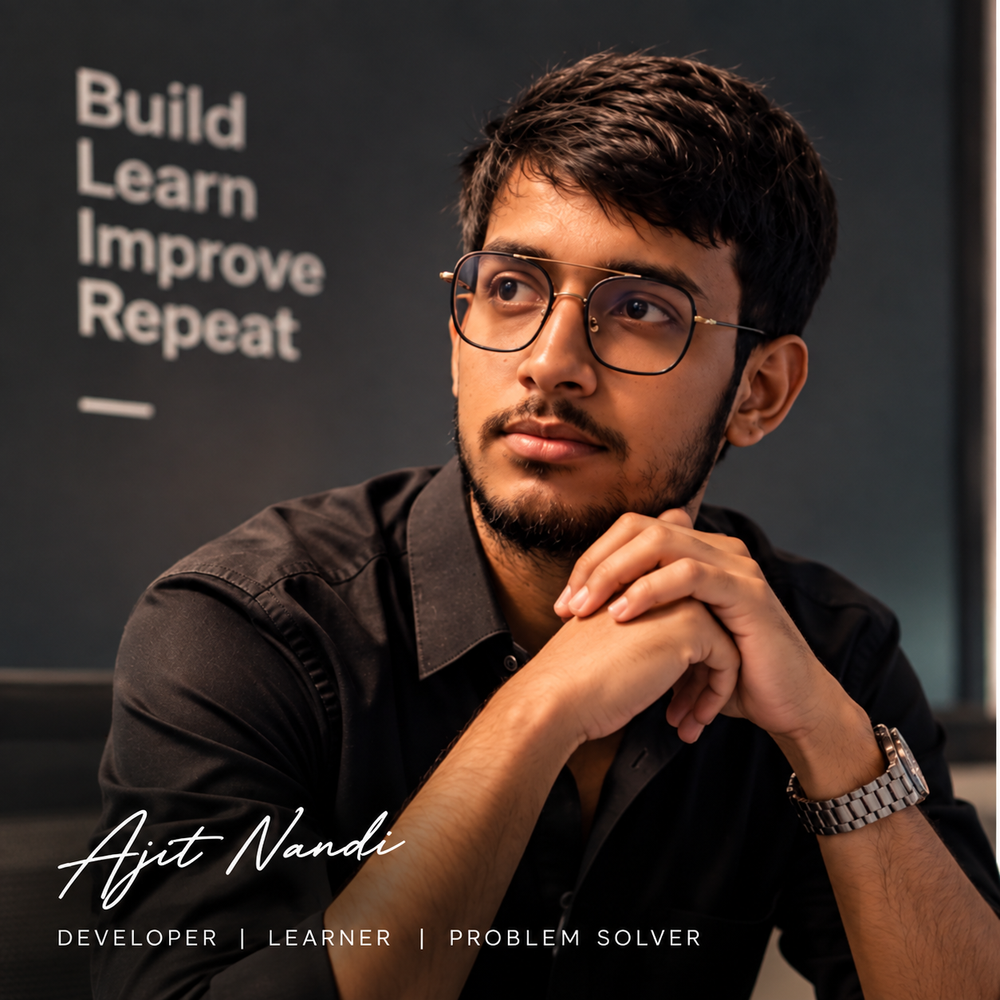

Featured Projects
Open to developer opportunities
Digital portfolio / Full Stack Developer
Building useful software with code, curiosity & consistency.
I’m Ajit Nandi, a Computer Science Engineering graduate focused on Full Stack Development, Java Backend Development, DSA, Microservices, and AI-integrated applications.
Ajit Nandi
Full Stack DeveloperKolkata, India · 2026 Graduate
const developer = {
name: "Ajit Nandi",
stack: ["Java", "React", "Node"],
focus: "Scalable software",
mindset: "Build • Learn • Improve"
};
7.2
CGPA · B.Tech CSE
Java + MERN
Backend · Frontend · APIs
Internships
Technologies & Concepts
B.Tech CSE Graduate
01 / About me
I turn learning into projects, and projects into proof.
A developer profile built around practical systems, backend fundamentals, and continuous learning.
Profile
Computer Science Engineering graduate from Meghnad Saha Institute of Technology, focused on Full Stack Development, Java Backend Development, DSA, and AI integration.
Experience
Worked as a Data Annotator Intern at iMerit Technology and as a Web Development and Design Intern at Oasis Infobyte, building foundations in AI workflows and frontend development.
Focus
Strengthening Spring Boot REST APIs, React interfaces, SQL, GitHub project proof, microservices concepts, and coding practice through LeetCode and GeeksforGeeks.
02 / Visual identity
A portfolio should feel personal before it feels polished.

03 / Experience & education
The path behind the projects.
2026
Education
B.Tech in Computer Science & Engineering
Meghnad Saha Institute of Technology
Completed B.Tech CSE with a CGPA of 7.2, building foundations across DSA, DBMS, Operating Systems, Computer Networks and Software Engineering.
03 mo
Internship
Data Annotator Intern
iMerit Technology · Kolkata
Annotated and reviewed datasets used for AI/ML model training while maintaining data quality through annotation guidelines and review standards.
01 mo
Internship
Web Development and Design Intern
Oasis Infobyte · Remote
Built responsive beginner-level web projects using HTML, CSS, and JavaScript while strengthening frontend structure, styling, and browser interaction.
Now
Learning
MERN Stack Development with AI
Desun Academy
Currently learning MongoDB, Express.js, React.js, Node.js, REST APIs, and AI-integrated web development.
04 / Selected work
Projects that show how I think and build.
Explore systems across full stack development, Java, AI/ML, distributed systems, and frontend practice.
MERN / SaaS
01
Featured · Full Stack
Multi-Tenant SaaS Application
A multi-tenant project and task management platform with organization-level data isolation.
- JWT authentication and authorization middleware
- Organization, user, project, task and dashboard workflows
- Tenant-aware protected REST APIs
MICROSERVICES / E-COMMERCE
API
GATEWAY AUTH PRODUCT ORDER PAYMENT INVENTORY
GATEWAY AUTH PRODUCT ORDER PAYMENT INVENTORY
02
Featured · Microservices
ShopSphere – Microservices E-Commerce Platform
A high-performance e-commerce platform designed with independently deployable backend services.
- API Gateway, Auth, User, Product, Cart, Order and Payment services
- Inventory, Notification, Review and Search services
- PostgreSQL/MongoDB integration and Docker-based infrastructure
AI / MACHINE LEARNING
REAL ↔ SYNTHETIC
03
AI / ML
AI Audio Deepfake Detection Model
Machine learning workflow for classifying real vs AI-generated audio using preprocessing and feature extraction.
DISTRIBUTED PAYMENT
DEVICE A→VOUCHER→DEVICE B
✓ VERIFIED
04
Java / Distributed Systems
Offline UPI-style Distributed Payment Prototype
Offline voucher-based transaction simulation with signed vouchers, settlement sync, and double-spend detection.
NETWORKS / DISTRIBUTED SYSTEMS
05
Systems
Distributed Big Packet Transfer System
Large-file transmission system using packet fragmentation, distributed nodes, and fault-tolerant routing concepts.
FRONTEND / API
25°Weather API☁
06
Frontend Practice
Weather API and Utility Web Apps
Frontend practice projects including Weather API, QR Code Generator, To-Do List, and Clock applications.
05 / What I can build
From interfaces to backend systems.
Responsive interfaces connected to practical REST APIs and databases.
Java, Spring Boot, Node.js and Express.js based backend workflows.
Service-oriented architectures with separate responsibilities and APIs.
Machine learning workflows and AI concepts connected to software products.
06 / Tech stack
Tools and concepts I use to build.
01
Languages
JavaJavaScriptPythonSQLHTMLCSS
02
Frontend
React.jsHTMLCSSJavaScript
03
Backend
Spring BootNode.jsExpress.jsREST APIs
04
Databases
MySQLPostgreSQLMongoDB
05
Tools
GitGitHubPostmanVS CodeDocker
06
Core CS
DSADBMSOperating SystemsComputer NetworksSoftware Engineering
07 / Coding & professional profiles
More proof, fewer claims.
08 / Achievements
Milestones along the way.
West Bengal Joint Entrance Examination rank.
Participated in Smart India Hackathon.
Acquiring Core ABAP Skills certification.
Computer Science and Engineering graduate.
Education
Bachelor of Technology in Computer Science & Engineering
Meghnad Saha Institute of Technology · 2022 — 2026
7.2CGPA
09 / Resume
Want the concise version?
Open my resume for education, experience, technical skills, projects, achievements, and certifications.
10 / Let’s build
Have a project, role, or opportunity in mind?
Based in Kolkata, India. Open to Full Stack, Java Backend, Software Developer trainee, internship, and entry-level opportunities.